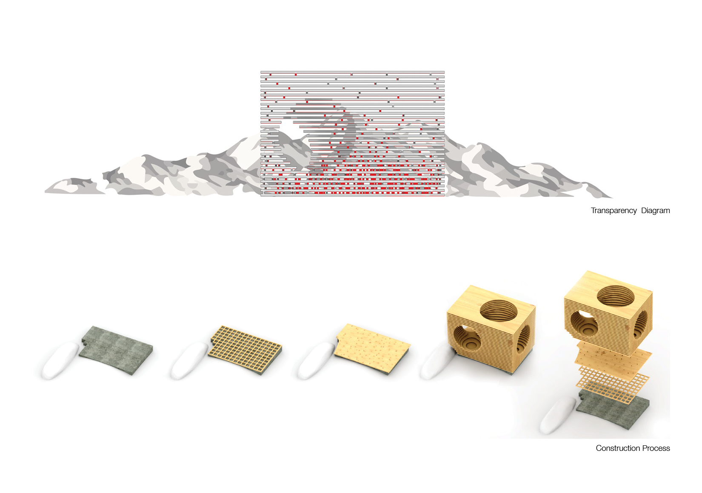
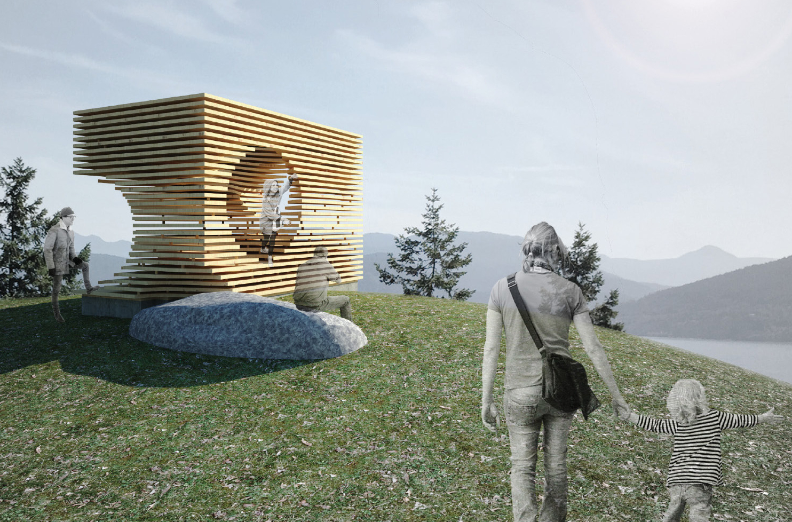

The project “Dissolving Solidity” was a pavilion located near Sea to Sky Highway, BC, Canada. The main concept was to create a “solid carved box” that was highly transparent at the same time. The design aimed to provide a viewing machine for people from both within and without.
Two strategies were applied to achieve our concept. The first one was layering. Instead of stacking up layers of wood panels directly, calibrated gaps were created between wood panels and allow light to penetrate through. Along with the varying depth of the wood panels, people were able to experience different transparency according their physical relation to the pavilion, hence a highly dynamic spatial experience was created.
The second strategy was the pin system. Each layer of wood panels was supported by a uniform pin throughout the pavilion. The pins were first generated according to global stress distribution and then locally optimized according to interior conditions. The resulting pins also created a gradient transparency from without. Here we created a dynamic “vision filter” between people, architecture and nature.
 